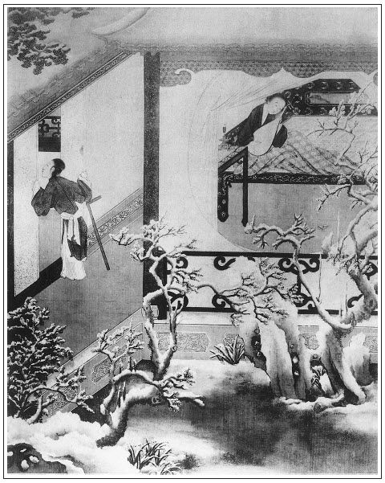

張回此回入李智、黃三，總為西門慶死後冷處作襯。故，先為熱處多下趨附之人也。
棒打搗鬼者，蓋欲撇開掏鬼，以便與西門往來也。然必寫掏鬼有奸在先者，一畫道國，一畫六兒，一伏一百回路遇之筍。湖州養六兒，以成愛姐之志也。然此時不一撇去，豈韓二竟忽然拋去舊情，不一旁視乎？故用王六兒以棒槌一鬧，西門慶一打，庶可且收起搗鬼。至拐財遠遁，用他著時，再令其來可也，王六兒淫事，必盡情寫之者，蓋本意欲於潘六兒之後，又寫一尤甚者也。
潘金蓮琵琶，寫得怨恨之至。真是舞殿冷袖，風雨淒淒。而瓶兒處互相掩映，便有春光融融之象。迨後打狗畜貓，皆此時憤恨所鍾。可知一家之怨恨，固非一日所成。稍有介意時，為之主者，當預為調停，庶不至於深耳。彼西門烏得知？
打韓二，必用棒槌，蓋為琵琶相映成趣。然則琵琶之恨，亦無非爭一棒槌耳。
詞曰：
銀箏宛轉，促柱調弦，聲繞樑間。巧作秦聲獨自憐。指輕妍，風回雪旋，緩揚清曲，響奪鈞天。說甚麼別鶴烏啼，試按《羅敷陌上》篇，休按《羅敷陌上》篇。
──右調《綿搭絮》

話說馮婆子走到前廳角門首，看見玳安在廳隔子前，拿著茶盤兒伺候。玳安望著馮媽努嘴兒：「你老人家先往那裡去，俺爹和應二爹說了話就起身。已先使棋童兒送酒去了。」那婆子聽見，兩步做一步走的去了。張夾文餘。原來應伯爵來說：「攬頭李智、黃四派了年例三萬香蠟等料錢糧下來，該一萬兩銀子，也有許多利息。上完了批，就在東平府見關銀子，來和你計較，做不做？」張旁已說過財方動頭，是故王六兒財中色也。西門慶道：「我那裡做他！攬頭以假充真，買官讓官。我衙門裡搭了事件，還要動他。我做他怎的！」伯爵道：「哥若不做，叫他另搭別人。你只借二千兩銀子與他，每月五分行利，叫他關了銀子還你，你心下何如？」西門慶道：「既是你的分上，我挪一千銀子與他罷。如今我莊子收拾，還沒銀子哩。」伯爵見西門慶吐了口兒，說道：「哥若十分沒銀子，看怎麼再撥五百兩貨物兒，湊個千五兒與他罷，他不敢少下你的。」西門慶道：「他少下我的，我有法兒處。又一件，應二哥，銀子便與他，只不叫他打著我的旗兒，在外邊東誆西騙。我打聽出來，只怕我衙門監裡放不下他。」伯爵道：「哥說的什麼話，典守者不得辭其責。他若在外邊打哥的旗兒，常沒事罷了，若壞了事，要我做甚麼？哥你只顧放心，但有差池，我就來對哥說。張夾佞人，小人。說定了，我明日叫他好寫文書。」西門慶道：「明日不教他來，我有勾當。叫他後日來。」說畢，伯爵去了。
西門慶叫玳安伺候馬，帶上眼紗，問棋童去沒有。玳安道：「來了，取挽手兒去了。」不一時，取了挽手兒來，打發西門慶上馬，逕往牛皮巷來。不想韓道國兄弟韓二搗鬼，耍錢輸了，吃的光睜睜兒的，走來哥家，問王六兒討酒吃。袖子裡掏出一條小腸兒來，張旁趣。說道：「嫂，我哥還沒來哩，我和你吃壺燒酒。」那婦人恐怕西門慶來，又見老馮在廚下，不去兜攬他，說道：「我是不吃。你要吃拿過一邊吃去，我那裡耐煩？你哥不在家，招是招非的，又來做什麼？」那韓二搗鬼，把眼兒涎睜著，又不去，看見桌底下一壇白泥頭酒，貼著紅紙帖兒，問道：「嫂子，是那裡酒？打開篩壺來俺每吃。耶樂！你自受用！」婦人道：「你趁早兒休動，是宅裡老爹送來的，你哥還沒見哩。等他來家，有便倒一甌子與你吃。」韓二道：「等什麼哥？就是皇帝爺的，我也吃一鍾兒！」張夾趣絕。才待搬泥頭，被婦人劈手一推，奪過酒來，提到屋裡去了。把二搗鬼仰八叉推了一交，張夾無情卻是世情。半日扒起來，惱羞變成怒，口裡喃喃吶吶罵道：「賊淫婦，我好意帶將菜兒來，見你獨自一個冷落落，和你吃杯酒。你不理我，倒推我一交。我教你不要慌，你另敘上了有錢的漢子，不理我了，要把我打開，故意兒囂我，訕我，又趍我。休叫我撞見，我叫你這不值錢的淫婦，白刀子進去紅刀子出來！」婦人見他的話不妨頭，一點紅從耳邊起，須臾紫脹了雙腮，便取棒槌在手，趕著打出來，繡眉棒槌正好搗鬼。罵道：「賊餓不死的殺才！你那裡吃醉了，來老娘這裡撒野火兒。老娘手裡饒你不過！」那二搗鬼口裡喇喇哩哩罵淫婦，直罵出門去。不想西門慶正騎馬來，見了他，問是誰，婦人道：「情知是誰，是韓二那廝，見他哥不在家，要便耍錢輸了，吃了酒來毆我。有他哥在家，常時撞見打一頓。」那二搗鬼看見，一溜煙跑了。西門慶又道：「這少死的花子，等我明日到衙門裡與他做功德！」婦人道：「又叫爹惹惱。」西門慶道：「你不知，休要慣了他。」婦人道：「爹說的是。自古良善彼人欺，慈悲生患害。」一面讓西門慶明間內坐。西門慶吩咐棋童回馬家去，叫玳安兒：「你在門首看，但掉著那光棍的影兒，就與我鎖在這裡，明日帶到衙門裡來。」玳安道：「他的魂兒聽見爹到，不知走的那裡去了。」
西門慶坐下。婦人見畢禮，連忙屋裡叫丫鬟錦兒拿了一盞果仁茶出來，與西門慶吃，就叫他磕頭。西門慶道：「也罷，到好個孩子，你且將就使著罷。」又道：「老馮在這裡，怎的不替你拿茶？」婦人道：「馮媽媽他老人家，我央及他廚下使著手哩。」西門慶又道：「頭裡我使小廝送來的那酒，是個內臣送我的竹葉清。裡頭有許多藥味，甚是峻利。我前日見你這裡打的酒，都吃不上口，我所以拿的這罈酒來。」婦人又道了萬福，說：「多謝爹的酒，正是這般說，俺每不爭氣，住在這僻巷子裡，張夾又插房子，可畏。又沒個好酒店，那裡得上樣的酒來吃，只往大街上取去。」西門慶道：「等韓夥計來家，你和他計較，等著獅子街那裡，替你破幾兩銀子買所房子，等你兩口子亦發搬到那裡住去罷。鋪子裡又近，買東西諸事方便。」婦人道：「爹說的是。看你老人家怎的可憐見，離了這塊兒也好。就是你老人家行走，也免了許多小人口嘴──咱行的正，也不怕他。繡旁虧他說得出爹心裡要處自情處，他在家和不在家一個樣兒，張旁就要買，妙極。也少不的打這條路兒來。」繡眉韓道國明放一著，又反形出夾。張夾幾轉曲盡。說一回，房裡放下桌兒，請西門慶進去寬了衣服坐。
須臾，安排酒菜上來，婦人陪定，把酒來斟。不一時，兩個並肩疊股而飲。吃的酒濃時，兩個脫剝上床交歡，自在玩耍。婦人早已床炕上鋪的厚厚的被褥，被裡熏的噴鼻香。西門慶見婦人好風月，一徑要打動他。家中袖了一個錦包兒來，打開，裡面銀托子、相思套、硫黃圈、藥煮的白綾帶子、張旁此處已露白綾帶，後卻是試金蓮的。懸玉環、封臍膏、勉鈴，一弄兒淫器。那婦人仰臥枕上，玉腿高蹺，囗舌內吐。西門慶先把勉鈴教婦人自放牝內，然後將銀托束其根，硫黃圈套其首，臍膏貼於臍上。婦人以手導入牝中，兩相迎湊，漸入大半。婦人呼道：「達達！我只怕你墩的腿酸，張夾然則婦人反不怕酸也。拿過枕頭來，你墊著坐，我淫婦自家動罷。」繡眉以淫婦自稱，妙絕。又道：「只怕你不自在，你把淫婦腿吊著㒲，你看好不好？」張夾屈體至此。西門慶真個把他腳帶解下一條來，拴他一足，吊在床隔子上低著拽，拽的婦人牝中之津如蝸之吐蜒，綿綿不絕，又拽出好些白漿子來。西門慶問道：「你如何流這些白？」才待要抹去，婦人道：「你休抹，等我吮咂了罷。」於是蹲跪在他面前吮吞數次，嗚咂有聲。咂的西門慶淫心輒起，掉過身子，兩個干後庭花。
龜頭上有硫黃圈，濡研難澀。婦人蹙眉隱忍，半晌僅沒其稜。西門慶頗作抽送，而婦人用手摸之，漸入大半，把屁股坐在西門慶懷裡，回首流眸，作顫聲叫：「達達！慢著些，後越發粗大，教淫婦怎生挨忍。」西門慶且扶起股，觀其出入之勢，因叫婦人小名：「王六兒，我的兒，你達不知心裡怎的只好這一樁兒，不想今日遇你，正可我之意。我和你明日生死難開。」婦人道：「達達，只怕後來耍的絮煩了，把奴不理怎了？」西門慶道：「相交下來，才見我不是這樣人。」說話之間，兩個干夠一頓飯時。西門慶令婦人沒高低淫聲浪語叫著才過。婦人在下，一面用手舉股承受其精，張夾自己用手舉股，情事如畫。樂極情濃，一洩如注。已而抽出那話來，帶著圈子，婦人還替他吮咂淨了，兩個方才並頭交股而臥。
正是：
一般滋味美，好耍後庭花。
有詞為證：
美冤家，一心愛折後庭花。尋常只在門前裡走，又被開路先鋒把住了他。放在戶中難禁受。轉絲韁勒回馬，親得勝弄的我身上麻，蹴損了奴的粉臉那丹霞。
西門慶與婦人摟抱到二鼓時分，小廝馬來接，方才起身回家。到次日，到衙門裡差了兩個緝捕，把二搗鬼拿到提刑院，只當做掏摸土賊，不由分說，一夾二十，打的順腿流血。睡了一個月，險不把命花了。往後嚇的影也再不敢上婦人門纏攪了。正是：
恨小非君子，無毒不丈夫。
遲了幾日，來保、韓道國一行人東京回來，備將前事對西門慶說：「翟管家見了女子，甚是歡喜，說爹費心。留俺府裡住了兩日，討了回書。送了爹一疋青馬，封了韓夥計女兒五十兩銀子禮錢，又與了小的二十兩盤纏。」西門慶道：「夠了。」看了回書，書中無非是知感不盡之意。自此兩家都下眷生名字，稱呼親家，繡眉外面援著親家，似支離可笑，然於內細思之，實亦不愧。張旁可笑。張夾西門親戚都是如此。不在話下。韓道國與西門慶磕頭拜謝回家。西門慶道：「韓夥計，你還把你女兒這禮錢收去，也是你兩口兒恩養孩兒一場。」韓道國再三不肯收，說道：「蒙老爹厚恩，禮錢是前日有了。這銀子小人怎好又受得？從前累的老爹好少哩！」西門慶道：「你不依，我就惱了。你將回家，不要花了，我有個處。」那韓道國就磕頭謝了，拜辭回去。
老婆見他漢子來家，滿心歡喜，一面接了行李，與他拂了塵上，問他長短：「孩子到那裡好麼？」這道國把往回一路的話，告訴一遍，說：「好人家，孩子到那裡，就與了三間房，兩個丫鬟伏侍，衣服頭面不消說。第二日，就領了後邊見了太太。翟管家甚是歡喜，留俺們住了兩日，酒飯連下人都吃不了。又與了五十兩禮錢。我再三推辭，大官人又不肯，還叫我拿回來了。」因把銀子與婦人收了。婦人一塊石頭方落地，因和韓道國說：「咱到明日，還得一兩銀子謝老馮。你不在，虧他常來做作伴兒。大官人那裡，也與了他一兩。」正說著，只見丫頭過來遞茶。韓道國道：「這個是那裡大姐？」婦人道：「這個是咱新買的丫頭，名喚錦兒。過來與你爹磕頭！」磕了頭，丫頭往廚下去了。
老婆如此這般，把西門慶勾搭之事，告訴一遍，「自從你去了，來行走了三四遭，才使四兩銀子買了這個丫頭。但來一遭，帶一二兩銀子來。第二的不知高低，氣不憤走來這裡放水。張夾然則二搗鬼亦即明做矣。被他撞見了，拿到衙門裡，打了個臭死，至今再不敢來了。大官人見不方便，許了要替我每大街上買一所房子，叫咱搬到那裡住去。」韓國道：「嗔道他頭裡不受這銀子，教我拿回來休要花了，原來就是這些話了。」婦人道：「這不是有了五十兩銀子，他到明日，一定與咱多添幾兩銀子，看所好房兒。也是我輸了身一場，且落他些好供給穿戴。」張夾六兒全是為利。韓道國道：「等我明日往鋪子裡去了，他若來時，你只推我不知道，休要怠慢了他，凡事奉承他些兒。如今好容易賺錢，怎麼趕的這個道路！」繡眉老婆偷人，難得道國亦不氣苦。予嘗謂好色甚於好財，觀此，則好財又甚於好色矣。張旁世情可歎！老婆笑道：「賊強人，倒路死的！你到會吃自在飯兒，你還不知老娘怎樣受苦哩！」兩個又笑了一回，打發他吃了晚飯，夫妻收拾歇下。到天明，韓道國宅裡討了鑰匙，開舖子去了，與了老馮一兩銀子謝他。張旁又補出。張夾不漏。俱不必細說。
一日，西門慶同夏提刑衙門回來。夏提刑見西門慶騎著一疋高頭點子青馬，問道：「長官那疋白馬怎的不騎，又換了這疋馬？到好一疋馬，不知口裡如何？」西門慶道：「那馬在家歇他兩日兒。這馬是昨日東京翟雲峰親家送來的，繡眉說得口角津津榮幸。是西夏劉參將送他的。口裡才四個牙兒，腳程緊慢都有他的。只是有些毛病兒，快護糟踅蹬。初時騎了路上走，把膘跌了許多，這兩日內吃的好些兒。」夏提刑道：「這馬甚是會行，但只好騎著躧街道兒罷了，不可走遠了他。論起在咱這裡，也值七八十兩銀子。我學生騎的那馬，昨日又瘸了。今早來衙門裡來，旋拿帖兒問捨親借了這疋馬騎來，甚是不方便。」西門慶道：「不打緊，長官沒馬，我家中還有一疋黃馬，送與長官罷。」夏提刑舉手道：「長官下顧，學生奉價過來。」西門慶道：「不須計較。學生到家，就差人送來。」兩個走到西街口上，西門慶舉手分路來家。到家就使玳安把馬送去。夏提刑見了大喜，賞了玳安一兩銀子，與了回帖兒，說：「多上覆，明日到衙門裡面謝。」
過了兩月，乃是十月中旬時分。夏提刑家中做了些菊花酒，叫了兩名小優兒，請西門慶一敘，以酬送馬之情。西門慶家中吃了午飯，理了些事務，往夏提刑家飲酒。原來夏提刑備辦一席齊整酒餚，只為西門慶一人而設。見了他來，不勝歡喜，降階迎接，至廳上敘禮。西門慶道：「如何長官這等費心？」夏提刑道：「今年寒家做了些菊花酒，張旁夏已秋矣，蓮能不悲乎！閒中屈執事一敘，再不敢請他客。」於是見畢禮數，寬去衣服，分賓主而坐。茶罷著棋，就席飲酒敘談，兩個小優兒在旁彈唱。張夾有此一段過文，入下無痕。正是：得多少──
金尊進酒浮香蟻，象板催箏唱鷓鴣。
不說西門慶在夏提刑家飲酒，單表潘金蓮見西門慶許多時不進他房裡來，每日翡翠衾寒，芙蓉帳冷。那一日把角門兒開著，在房內銀燈高點，靠定幃屏，彈弄琵琶。等到二三更，使春梅連瞧數次，不見動靜。
正是：
銀箏夜久慇勤弄，寂寞空房不忍彈。張旁先不忍彈，妙。
取過琵琶，橫在膝上，低低彈了個《二犯江兒水》張夾先低低，妙。唱道：
悶把幃屏來靠，和衣強睡倒。
猛聽得房簷上鐵馬兒一片聲響，只道西門慶敲的門環兒響，連忙使春梅去瞧。春梅回道：「娘，錯了，是外邊風起，落雪了。」繡眉人只知鬲越相思之苦，孰知眼前相思之苦如此。人只知野合想思之苦，孰知閨閫夫妻相思之苦尤甚。可勝歎息。婦人又彈唱道：
聽風聲嘹亮，雪灑窗寮，任冰花片片飄。
一回兒燈昏香盡，心裡欲待去剔，見西門慶不來，又意兒懶的動彈了。唱道：
懶把寶燈挑，慵將香篆燒。捱過今宵，怕到明朝。細尋思，這煩惱何日是了？想起來，今夜裡心兒內焦，誤了我青春年少！你撇的人，有上稍來沒下稍。張旁與彈琵琶唱「燒一炷兒香」對照。張夾且頓住。
且說西門慶約一更時分，從夏提刑家吃了酒歸來。一路天氣陰晦，空中半雨半雪下來，落在衣服上都化了。不免打馬來家，小廝打著燈籠，就不到後邊，逕往李瓶兒房來。李瓶兒迎著，一面替他拂去身上雪霰，接了衣服。止穿綾敞衣，坐在床上，就問：「哥兒睡了不曾？」李瓶兒道：「小官兒頑了這回，方睡下了。」迎春拿茶來吃了。李瓶兒問，「今夜吃酒來的早？」西門慶道：「夏龍溪因我前日送了他那疋馬，今日為我費心，治了一席酒請我，又叫了兩個小優兒。和他坐了這一回，見天氣下雪，來家早些。」李瓶兒道：「你吃酒，叫丫頭篩酒來你吃。大雪裡來家，只怕冷哩。」西門慶道：「還有那葡萄酒，你篩來我吃。今日他家吃的是造的菊花酒，我嫌他香淆氣的，我沒大好生吃。」於是迎春放下桌兒，就是幾碟嗄飯、細巧果菜之類。李瓶兒拿杌兒在旁邊坐下。桌下放著一架小火盆兒。這裡兩個吃酒，潘金蓮在那邊屋裡冷清清，獨自一個兒坐在床上。懷抱著琵琶，桌上燈昏燭暗。張夾一處熱，一處冷，咫尺便如此，天下事難周遍也。待要睡了，又恐怕西門慶一時來；待要不睡，又是那盹困，又是寒冷。不免除去冠兒，亂挽烏雲，把帳兒放下半邊來，擁衾而坐，正是：
倦倚繡床愁懶睡，低垂錦帳繡衾空。
早知薄倖輕拋棄，辜負奴家一片心。
又唱道：
懊恨薄情輕棄，離愁閒自惱。
又喚春梅過來：「你去外邊再瞧瞧，你爹來了沒有？快來回我話。」那春梅走去，良久回來，說道：「娘還認爹沒來哩，爹來家不耐煩了，在六娘房裡吃酒的不是？」繡眉數語傷心之極。這婦人不聽罷了，聽了如同心上戳上幾把刀子一般，張夾奇語。罵了幾句負心賊，由不得撲簌簌眼中流下淚來。一逕把那琵琶兒放得高高的，口中又唱道：張夾此處高高的，又妙。
心癢痛難搔，愁懷悶自焦。讓了甜桃，去尋酸棗。張旁直與「早下米」數語頂針。奴將你這定盤星兒錯認了。想起來，心兒裡焦，誤了我青春年少。你撇的人，有上稍來沒下稍。
西門慶正吃酒，忽聽見彈的琵琶聲，便問：「是誰彈琵琶？」迎春答道：「是五娘在那邊彈琵琶響。」李瓶兒道：「原來你五娘還沒睡哩。張旁卿安得知他人之冷？繡春，你快去請你五娘來吃酒。你說俺娘請哩。」那繡春去了。李瓶兒忙吩咐迎春：「安下個坐兒，放個鐘箸在面前。」良久，繡春走來說：「五娘摘了頭，不來哩。」李瓶兒道：「迎春，你再去請五娘去。你說，娘和爹請五娘哩。」張旁金蓮甚不願聞者。不多時，迎春來說：「五娘把角門兒關了，說吹了燈，睡下了。」張夾妙。西門慶道：「休要信那小淫婦兒，等我和你兩個拉他去，務要把他拉了來。咱和他下盤棋耍子。」於是和李瓶兒同來打他角門。打了半日，張夾妙。春梅把角門子開了。西門慶拉著李瓶兒進入他房中，張旁又是金蓮不忍見者。只見婦人坐在帳中，琵琶放在旁邊。西門慶道：「怪小淫婦兒，怎的兩三轉請著你不去！」金蓮坐在床上，紋絲兒不動，把臉兒沉著，半日說道：張夾妒婦之苦。「那沒時運的人兒，丟在這冷屋裡，隨我自生自活的，又來瞅睬我怎的？沒的空費了你這個心，留著別處使。」繡眉語雖酸甚，臉雖皮甚，然情自可憐西門慶道：「怪奴才！『八十歲媽媽沒牙──有那些唇說的』？李大姐那邊請你和他下盤棋兒，只顧等你不去了。」李瓶兒道：「姐姐，可不怎的。我那屋裡擺下棋子了，咱們閒著下一盤兒，賭杯酒吃。」金蓮道：「李大姐，你們自去，我不去。你不知我心裡不耐煩，我如今睡也，比不的你們心寬閒散。我這兩日只有口游氣兒，黃湯淡水誰嘗著來？我成日睜著臉兒過日子哩！」繡眉當此時此景，金蓮固雖傷心，然西門慶亦難為情。張夾深深埋恨。西門慶道：「怪奴才，你好好兒的，怎的不好？你若心內不自在，早對我說，我好請太醫來看你。」張夾扯白妙絕。金蓮道：「你不信，叫春梅拿過我的鏡子來，等我瞧。這兩日，瘦的像個人模樣哩！」春梅把鏡子真個遞在婦人手裡，燈下觀看。張旁「自瞧」，妙。心內自覺十分疲瘦，然卻未曾對鏡一照。正是：
羞對菱花拭粉妝，為郎憔瘦減容光。
閉門不管閒風月，任你梅花自主張。
西門慶拿過鏡子也照了照，說道：「我怎麼不瘦？」金蓮道：「拿甚麼比你！你每日碗酒塊肉，吃的肥胖胖的，專一隻奈何人。」張夾試問如何奈何？被西門慶不由分說，一屁股挨著他坐在床上，摟過脖子來就親了個嘴，舒手被裡，摸見他還沒脫衣裳，兩隻手齊插在他腰裡去，說道：「我的兒，是個瘦了些。」張旁瘦卻在此處。一笑。金蓮道：「怪行貨子，好冷手，冰的人慌！張旁點雪。莫不我哄了你不成？我的苦惱，誰人知道，眼淚打肚裡流罷了。」亂了一回，西門慶還把他強死強活拉到李瓶兒房內，下了一盤棋，吃了一回酒。臨起身，李瓶兒見他這等臉酸，把西門慶攛掇過他這邊歇了。正是得多少：
腰瘦故知閒事惱，淚痕只為別情濃。
本章完!